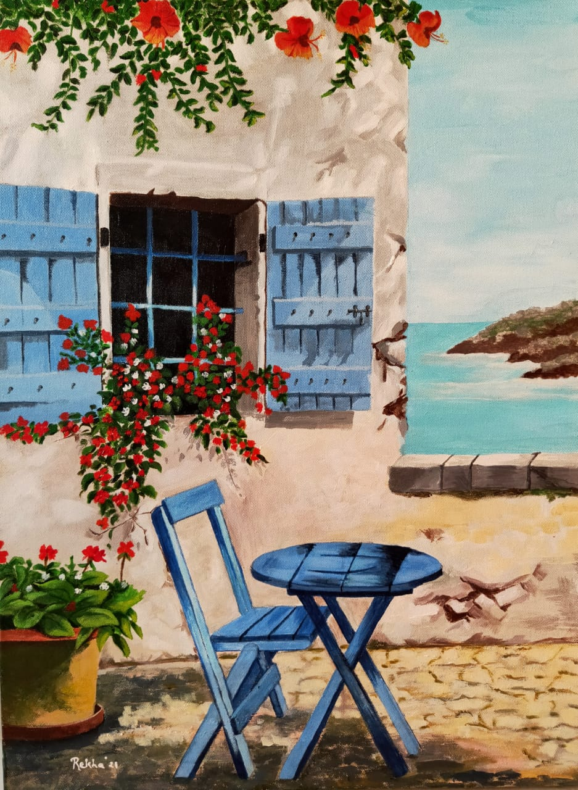

| Home | Physics... | ...music... | ...and their intersection | Sound Journal | Pictures |
|---|
"'What is this great and pleasing sound that fills my ears?' I asked. 'That,' replied my grandfather, 'is a concord of tones separated by unequal but nevertheless carefully proportioned intervals, caused by the rapid motion of the spheres themselves. The high and low tones blended together produce different harmonies...[The] outermost sphere, the star-bearer, with its swifter motion, gives forth a higher-pithed tone, whereas the lunar sphere, the lowest, has the deepest tone.'"
—Cicero, De re publica
"If you truly love nature, you will find beauty everywhere."
—Van Gogh
Greek Countryside by Rekha Vora
This is a continually updated "sound journal," a place where I keep record of meaningful auditory experiences. It was inspired by the question, "What is music?."
Mother Blues playing piano
"Titans," and a selection from Sister Blues.
Harmony of the Worlds
☸Discovery
The Spirit of Music
Message to music friends, Dany, Mikey, Nathan ~ the beginning of a journey
Sound of wind in New Mexico
Sound a stream in New Mexico
Dany playing the guitar over voice message.
Mikey's lullaby, inspired by the major 7th, his characteristic interval.
Learning to improvise while playing a pedal; Jeffry Eckels ~ sus chord ~ "joy," "jubilation"
Revisiting some chords
Stephen warming up in the recording studio.
Message to music friends from Mikey on growth and navigating difficulties
Reflecting on Mikey's chords
More peaceful chords
A peaceful chord.
A wondrous time with friends. Today marks the first anniversary of this sound journal.
Mikey's song, a peaceful sound
"Four" ~ in the presence of Solvay ☉
Dark was the night; cold was the ground.
"Ate a Vista" ~ "See you later"
Message to music friends
Imitating Bireli Lagrene ~ the start of a wonderful month
Figuring out a melody
Mikey playing guitar
Thanks to Mikey for helping me start the day this way.
"When will this feeling end?"
Blues
A chord Mikey and Finn showed me (independently) within 24 hours of each other. It anticipates the reflectiveness of fall.
A voice message to Dany, Mikey, Nathan, and Leo about this chord
Body and Soul
Solvay's poem set to Stephen's music; sounds of nature
September in the Rain
A friend who continues to inspire
A voice message to Dany, Mikey, Nathan, and Leo ~ Beginning of an adventure
Ba
"All the Things You Are"
Figuring out a Brazilian montuno
Figuring out "Ate A Vista"
Sounds of wilderness
Anticipating autumn with the cooler weather
Figuring out "I Loves You, Porgy"
A man looked down by the stream
He wanted to know the truth
So he sat by the stream and listened
And he gave up
all desire for things to be a certain way
Opened himself
And he heard the descending universe
Heard it in all its infinite majesty
"Are there certain instruments on which you can better express certain emotions?" -A.S.
"Just the Way You Are"
Sharing a vamp with my musical friends Dany, Mikey, Nathan, and Leo over a WhatsApp message.
Patricia, "Sister Blues," playing beautiful music on the piano
The birthday girl playing piano
Kurt ~ The Spirit of Music
A week of friends' birthdays.
The sound of deep thought
"Tenderly"
Playing the keyboard in 5822--thanks to Solvay for catching me:)
Playing in the midst of a thunderstorm, enjoying the last hours of this wonderful summer
Peace, nature, and beauty (themes from Sounds of the Great Smoky Mountains, which I grew up listening to).
A song inspired by a friend (major 3rd)
Blues
For a friend
Musical time with friends
The start to a wondrous semester
Playing on the balcony
5822
"Stella by Starlight" on jazz guitar
Trying to feel a Dilla beat.
I am learning how to play jazz guitar. Tim Hicks--thanks:)
Fourth of July
This was from earlier this month, when Solvay and I went to Stephen's and played music in the beautiful backyard (at a distance).
Some deep-sounding chords
"Stormy Monday"
"Wicked Game"
"Knocking on Heaven's Door"
"Thrill is Gone"
"Hey Joe"
Blues, recorded entirely on GarageBand on an iPhone (no loops were used)
After a conversation with a dear friend.
Dany's groove
Reggae on guitar (open tuning)
Copying something Alain Perez plays on piano.
Equipoise
Figuring out "Amelia," by Joni Mitchell
Happy birthday to a friend.
Playing "Amazing Grace" on the guitar. I've been trying to copy the way Stephen plays guitar.
Playing "Wicked Game" on the front porch at sunset.
Noodling on the acoustic guitar
"Shiny Stockings" in the rain.
Another rainy day in Dallas.
The sound of rain, heard from my parents' front porch.
"Quiet Nights of Quiet Stars." The streets of Dallas have been very quiet.
Playing "Hard Times" at Parker's apartment.
Enjoying time with Parker's friends Ella, Havi, and Henry.
Listening to the 2:00 p.m. bells at Loyola after meeting Emma.
Playing "It Could Happen To You" with Camden Hunt.
One of my professors comparing the time evolution of the quantum mechanical density of states to populations of bunnies.
Trying to express my feelings after having a conversation with a dear friend.
Shali and Dil performing.
Playing Vangelis's "Ask the Mountains" from his 1995 album Voices.
Sitting in with the Alex Rivera Quartet at the Wine Therapist, playing "September in the Rain." I'm playing the piccolo bass.
Playing Victor Wooten's "The Lesson."
Birthday greetings from Ba.
Meditating on Vangelis's theme "Heaven and Hell."
My transcription of Jaco Pastorius's "Forgotten Love," played in MIDI.
Andre Swartz playing with Addis.
Playing "Donna Lee" using MIDI technology.
Piccolo bass guitar, which I'll be playing this Saturday at Shebelle.
Playing "America the Beautiful" with Camden Hunt
Playing "Driftin'" with Camden Hunt
Playing "Almost Home" from Sounds of the Great Smoky Mountains, a CD I grew up listening to.
Playing "Wave" with Todd Mosby at his "Advanced Jazz Improvisation" masterclass at the Eisemann Center.
"Song of the Seas," a theme by Vangelis, played using MIDI technology. This is for my family in India.
Playing "Shakey Ground" with Strictly Tablue.
Playing old-time music at Joe Izen's New Year's Eve party.
Friends playing chess.
Playing "Stormy Monday" with Strictly Tablue.
Playing "Christmas Time is Here" with Mark Scott and Andre Swartz.
Playing "On the Sunny Side of the Street" with Khai Nguyen and Kevin West.
Sounds of a beach near Mumbai.
Playing a waltz with the Squirrelheads.
"Everything's Good"
The UTD warning siren, somewhere between an Ab and A.
Playing "Searching" with Stephen at the 2019 Global Village Market.
"Stella by Starlight" played using MIDI technology.
"In a Sentimental Mood" played using MIDI technology.
Manjira (a pair of small crash cymbals) which has been passed down in my mom's family for generations.
The Dallas Opera tuning.
Squeaking door at the DMA.
Fountain outside the Dallas Museum of Art.
Camden Hunt whistling "Doxy." I'm playing piano.